Thống kê tóm tắt có thể giống hệt nhau trong khi dữ liệu khác hẳn nhau. Bài này luyện matplotlib, thư viện vẽ mà mọi thư viện khác (pandas, seaborn) dựa vào: cách một hình được dựng lên, chọn loại biểu đồ theo câu hỏi, và các biểu đồ bạn sẽ vẽ suốt lộ trình ML: learning curve, confusion matrix, lưới ảnh. Mọi đoạn code dưới đây đều vẽ ra hình thật ngay bên dưới, và bấm Chạy để vẽ lại sau khi sửa.
Vì sao phải vẽ
Vì sao cần học
Một biểu đồ cho thấy ngay giá trị ngoại lai, phân bố lệch, xu hướng theo mùa, hay một cột bị nhập sai đơn vị. Khi train model, learning curve cho biết model đang học, đang overfit hay learning rate quá lớn, chỉ qua một cái nhìn. Vẽ trước khi train giúp bạn tránh train model trên dữ liệu hỏng; vẽ trong khi train giúp bạn dừng sớm một lần chạy hỏng thay vì chờ hết.
Lệnh import matplotlib.pyplot as plt nạp phần vẽ của matplotlib với tên ngắn plt; mọi đoạn code trong bài bắt đầu như vậy. Bốn bộ dữ liệu dưới đây có cùng trung bình, cùng độ lệch chuẩn của x và y, và cùng hệ số tương quan đến hai chữ số thập phân (bộ tứ Anscombe). Chỉ khi vẽ ra mới thấy chúng khác nhau hoàn toàn:
importnumpyasnpimportmatplotlib.pyplotaspltx=np.array([10,8,13,9,11,14,6,4,12,7,5])x4=np.array([8,8,8,8,8,8,8,19,8,8,8])ys=[np.array([8.04,6.95,7.58,8.81,8.33,9.96,7.24,4.26,10.84,4.82,5.68]),np.array([9.14,8.14,8.74,8.77,9.26,8.10,6.13,3.10,9.13,7.26,4.74]),np.array([7.46,6.77,12.74,7.11,7.81,8.84,6.08,5.39,8.15,6.42,5.73]),np.array([6.58,5.76,7.71,8.84,8.47,7.04,5.25,12.50,5.56,7.91,6.89])]xs=[x,x,x,x4]fig,axes=plt.subplots(1,4,figsize=(12,2.8),sharey=True)# 1 hàng 4 khung, chung trục yforkinrange(4):ax=axes[k]ax.scatter(xs[k],ys[k])# vẽ điểm (x, y)r=np.corrcoef(xs[k],ys[k])[0,1]# hệ số tương quan, từ -1 tới 1ax.set_title(f"bộ {k+1}: mean y = {ys[k].mean():.2f}, r = {r:.2f}",fontsize=9)plt.tight_layout()
Kết quả khi chạy
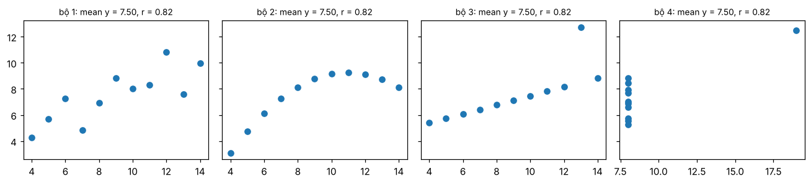
Bộ 1 là quan hệ tuyến tính có nhiễu, bộ 2 là đường cong, bộ 3 là đường thẳng với một điểm ngoại lai, bộ 4 gần như không có quan hệ, chỉ một điểm kéo cả hệ số tương quan lên. Một model hồi quy tuyến tính cho cả bốn cùng một đường thẳng.
Figure và Axes
Một Figure là cả bức hình; mỗi Axes là một khung biểu đồ bên trong, có trục x, trục y, tiêu đề, chú thích riêng. Cách viết rõ ràng nhất là tạo cả hai bằng plt.subplots rồi gọi hàm vẽ trên từng ax:
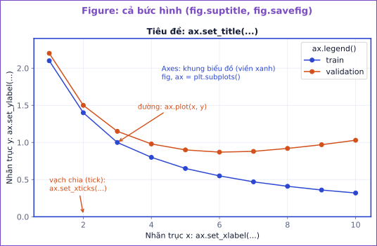
Các phần của một hình matplotlib và lệnh đặt từng phần. Mọi lệnh đều gọi qua ax, trừ những gì thuộc cả bức hình (fig.suptitle, fig.savefig).
importnumpyasnpimportmatplotlib.pyplotaspltmonths=["T1","T2","T3","T4","T5","T6"]revenue=np.array([120,135,128,160,210,190])# triệu đồngorders=np.array([80,88,85,101,140,122])fig,axes=plt.subplots(1,2,figsize=(10,3.5))# 1 hàng, 2 khungaxes[0].plot(months,revenue,marker="o")axes[0].set_title("Doanh thu tháng 5 tăng vọt?")axes[0].set_ylabel("triệu đồng")axes[1].bar(months,orders,color="#7a8bd6")axes[1].set_title("Số đơn theo tháng")axes[1].set_ylabel("đơn")fig.suptitle("Shop nội thất, 6 tháng đầu 2026")plt.tight_layout()# tránh chữ đè nhau
Kết quả khi chạy
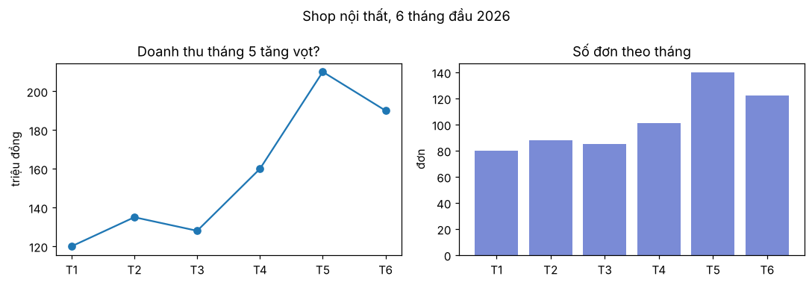
plt.subplots(2, 3) cho axes là mảng numpy shape (2, 3), lấy khung bằng axes[hàng, cột]; axes.ravel() duỗi thành 1 chiều để duyệt bằng for.
Lỗi hay gặp
Trộn hai cách viết. matplotlib có hai kiểu: plt.plot(...) (vẽ lên "khung hiện tại") và ax.plot(...) (vẽ lên khung chỉ định). Khi có nhiều khung, plt.title() chỉ đặt tiêu đề cho khung cuối cùng, dễ nhầm. Có nhiều hơn một khung thì luôn dùng fig, axes = plt.subplots(...) và gọi qua từng ax. Tên hàm hơi khác nhau giữa hai kiểu: plt.title ứng với ax.set_title, plt.xlabel ứng với ax.set_xlabel.
Chọn biểu đồ theo câu hỏi
Câu hỏi
Biểu đồ
Lệnh
Thay đổi theo thời gian thế nào?
line
ax.plot(x, y)
Nhóm nào lớn hơn?
bar
ax.bar(names, values), ax.barh(...)
Giá trị phân bố ra sao, có ngoại lai không?
histogram, boxplot
ax.hist(v, bins=30), ax.boxplot(v)
Hai biến có liên quan không?
scatter
ax.scatter(x, y, alpha=.3)
Giá trị trên một lưới (ảnh, ma trận)?
heatmap
ax.imshow(M)
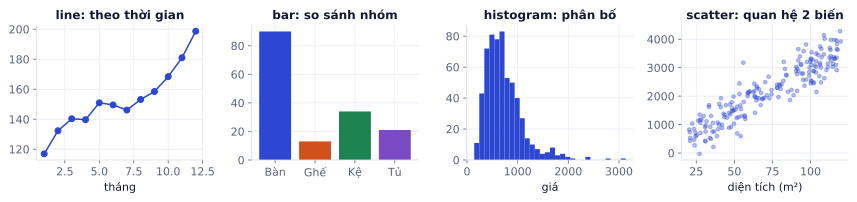
Bốn loại biểu đồ cho bốn loại câu hỏi. Histogram giá ở đây lệch phải: nhiều đơn rẻ, ít đơn rất đắt, đúng kiểu dữ liệu bán hàng thật.
line: learning curve
Biểu đồ đường bạn sẽ nhìn nhiều nhất là learning curve: loss trên tập train và tập validation theo từng epoch.
importnumpyasnpimportmatplotlib.pyplotasplt# loss ghi lại sau mỗi epoch của một lần train (số liệu ví dụ)train_loss=[2.10,1.52,1.18,0.95,0.80,0.68,0.59,0.52,0.46,0.41,0.37,0.33,0.30,0.27,0.25]val_loss=[2.15,1.60,1.29,1.10,0.99,0.92,0.88,0.86,0.87,0.89,0.92,0.96,1.00,1.05,1.10]epochs=np.arange(1,len(train_loss)+1)# 1, 2, ..., 15best=np.argmin(val_loss)# VỊ TRÍ (bắt đầu từ 0) của val loss nhỏ nhấtfig,ax=plt.subplots(figsize=(6.5,3.6))ax.plot(epochs,train_loss,label="train")ax.plot(epochs,val_loss,label="validation")ax.axvline(epochs[best],color="gray",ls="--",lw=1)ax.annotate(f"tốt nhất: epoch {epochs[best]}",xy=(epochs[best],val_loss[best]),xytext=(epochs[best]+1.5,val_loss[best]+0.6),arrowprops=dict(arrowstyle="->"))ax.set_xlabel("epoch");ax.set_ylabel("loss");ax.legend()ax.set_title("Sau epoch tốt nhất, val loss tăng: model bắt đầu overfit")print("epoch tốt nhất:",epochs[best])
Kết quả khi chạy
epoch tốt nhất: 8
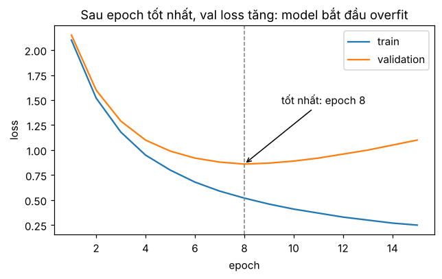
Train loss giảm mãi, còn val loss chạm đáy rồi đi lên: khoảng cách giữa hai đường là dấu hiệu overfit (P1.2). Checkpoint nên giữ là checkpoint ở epoch có val loss thấp nhất.
bar: so sánh nhóm
importmatplotlib.pyplotaspltproducts=["gương LED","bàn trang điểm","ghế đôn","kệ mỹ phẩm","đèn bàn"]revenue=[270,560,95,88,52]# triệu đồngorder=sorted(range(len(products)),key=lambdai:revenue[i])# sắp tăng dần để thanh dài nhất ở trênfig,ax=plt.subplots(figsize=(6.5,3))bars=ax.barh([products[i]foriinorder],[revenue[i]foriinorder],color="#e8875a")ax.bar_label(bars,fmt="%d tr")# ghi số ở đầu mỗi thanhax.set_xlabel("doanh thu (triệu đồng)")ax.set_title("Bàn trang điểm chiếm hơn nửa doanh thu")
Tên nhóm dài thì dùng barh (thanh ngang) để chữ không đè nhau, và sắp theo giá trị để người xem thấy thứ hạng ngay.
Lỗi hay gặp
Trục y của biểu đồ cột không bắt đầu từ 0. Chiều dài thanh là thứ mắt so sánh. Hai cột 96 và 100 trên trục bắt đầu từ 95 trông như chênh nhau 5 lần. matplotlib tự bắt đầu cột từ 0, nhưng nếu bạn đặt ax.set_ylim(95, 101) để "nhìn rõ hơn" thì biểu đồ nói dối. Với biểu đồ đường thì không cần bắt đầu từ 0, vì mắt đọc độ dốc chứ không đọc chiều dài.
histogram và boxplot: phân bố
importnumpyasnpimportmatplotlib.pyplotaspltrng=np.random.default_rng(0)order_value=rng.lognormal(mean=6,sigma=0.7,size=2000)# giá trị đơn (nghìn đồng), lệch phải như thậtfig,axes=plt.subplots(1,3,figsize=(12,3))axes[0].hist(order_value,bins=5)axes[0].set_title("bins=5: mất hết chi tiết")axes[1].hist(order_value,bins=50)axes[1].axvline(np.median(order_value),color="k",ls="--",label=f"trung vị {np.median(order_value):.0f}")axes[1].axvline(order_value.mean(),color="r",ls=":",label=f"trung bình {order_value.mean():.0f}")axes[1].legend();axes[1].set_title("bins=50: thấy đuôi dài bên phải")axes[2].boxplot(order_value,vert=False)axes[2].set_title("boxplot: các chấm là ngoại lai")foraxinaxes:ax.set_xlabel("giá trị đơn (nghìn đồng)")plt.tight_layout()
Kết quả khi chạy
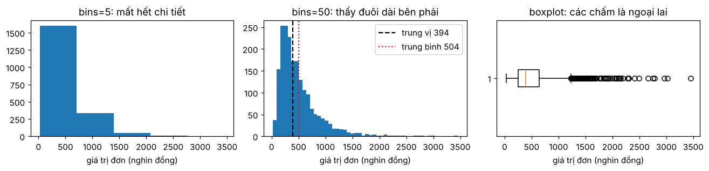
Histogram chia khoảng giá trị thành các bin bằng nhau rồi đếm số điểm rơi vào mỗi bin. Số bin quá ít làm mất hình dạng, quá nhiều làm biểu đồ lởm chởm; bắt đầu với 30–50 rồi chỉnh. Phân bố lệch phải thì trung bình bị kéo về phía đuôi, lớn hơn trung vị: báo cáo "giá trị đơn điển hình" nên dùng trung vị.
Boxplot tóm tắt phân bố trong một hình: hộp từ phân vị 25% tới 75%, vạch giữa là trung vị, "râu" kéo tới điểm xa nhất còn nằm trong 1,5 lần độ rộng hộp, các chấm ngoài râu là ngoại lai.
scatter: quan hệ giữa hai biến
importnumpyasnpimportmatplotlib.pyplotaspltrng=np.random.default_rng(1)n=300area=rng.uniform(30,120,n)# diện tích căn hộ (m²)price=0.045*area+rng.normal(0,0.6,n)# giá (tỷ đồng)district=rng.integers(0,3,n)# 3 quậnprice+=district*0.8fig,ax=plt.subplots(figsize=(6,3.8))sc=ax.scatter(area,price,c=district,cmap="viridis",s=14,alpha=0.6)ax.legend(*sc.legend_elements(),title="quận")ax.set_xlabel("diện tích (m²)");ax.set_ylabel("giá (tỷ đồng)")ax.set_title("Giá tăng theo diện tích, mỗi quận một mức")
Kết quả khi chạy
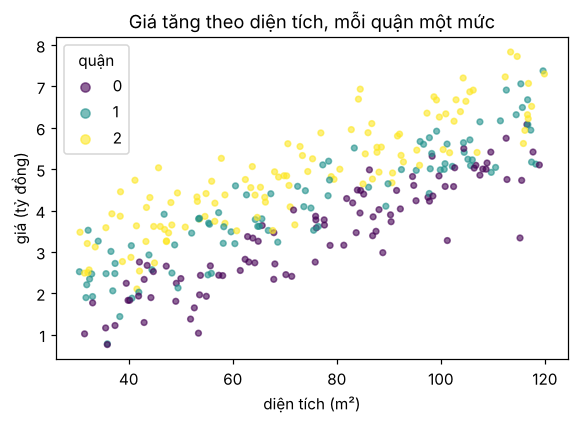
c= tô màu theo một cột (nhãn lớp, quận), alpha làm điểm trong suốt để thấy chỗ dày đặc, s là kích thước điểm. Đây là cách xem dữ liệu phân loại ở P1: điểm của các lớp tách nhau hay chồng lên nhau.
Biểu đồ cho ML: ảnh và confusion matrix
ax.imshow(M) vẽ một mảng 2 chiều thành lưới ô màu. Ảnh xám là mảng (H, W), ảnh màu là (H, W, 3). Bộ chữ số viết tay digits có sẵn trong scikit-learn, mỗi ảnh 8×8:
Luôn xem vài chục ảnh kèm nhãn trước khi train một model ảnh: bạn sẽ bắt được ảnh bị xoay, nhãn bị lệch, hay ảnh trắng trơn.
Confusion matrix cho biết model nhầm lớp nào thành lớp nào: ô [i, j] là số mẫu có nhãn thật i mà model đoán j. Vẽ bằng imshow và ghi số vào từng ô:
importnumpyasnpimportmatplotlib.pyplotaspltclasses=["bàn","ghế","gương"]cm=np.array([[48,2,0],[6,41,3],[1,4,45]])# hàng: nhãn thật, cột: model đoánfig,ax=plt.subplots(figsize=(4.2,3.6))im=ax.imshow(cm,cmap="Blues")foriinrange(3):forjinrange(3):ax.text(j,i,cm[i,j],ha="center",va="center",color="white"ifcm[i,j]>cm.max()/2else"black")ax.set_xticks(range(3),classes);ax.set_yticks(range(3),classes)ax.set_xlabel("model đoán");ax.set_ylabel("nhãn thật")fig.colorbar(im,ax=ax)ax.set_title("Hay nhầm ghế thành bàn")print("accuracy:",np.trace(cm)/cm.sum())
Kết quả khi chạy
accuracy: 0.8933333333333333
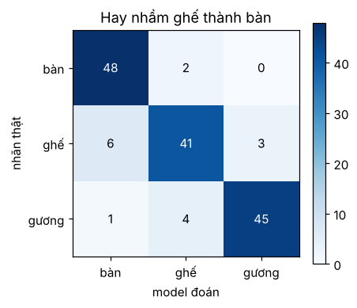
Đường chéo là phần đoán đúng. Ô lớn nhất ngoài đường chéo (6 cái ghế bị đoán là bàn) là chỗ đầu tiên cần xem lại: ảnh ghế đó trông thế nào, nhãn có sai không.
Vẽ nhanh từ pandas
DataFrame và Series có sẵn .plot, bên dưới vẫn là matplotlib, nên truyền ax= để vẽ vào khung bạn chọn:
importpandasaspdimportmatplotlib.pyplotaspltdf=pd.DataFrame({"month":["T1","T2","T3","T4"],"Bàn A":[3000,6000,4500,7000],"Ghế B":[400,900,1200,800]}).set_index("month")fig,axes=plt.subplots(1,2,figsize=(10,3))df.plot(ax=axes[0],marker="o",title="Doanh thu theo tháng")# mỗi cột một đườngdf.sum().plot.bar(ax=axes[1],title="Tổng doanh thu",rot=0)# Series → baraxes[0].set_ylabel("nghìn đồng")plt.tight_layout()
Kết quả khi chạy
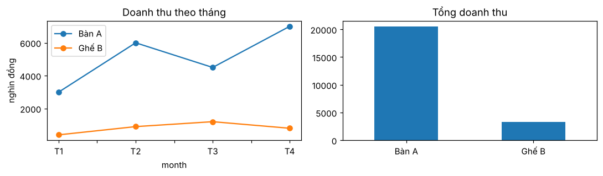
Các kiểu hay dùng: .plot() (line), .plot.bar(), .plot.barh(), .plot.hist(bins=...), .plot.scatter(x=..., y=...). Muốn chỉnh chi tiết thì lấy ax về và chỉnh tiếp như mọi khung matplotlib.
Thang log, lưu hình và vẽ nhiều hình
Khi giá trị trải từ vài chục tới vài triệu (lượt xem, giá nhà, learning rate), thang thường dồn mọi thứ nhỏ vào sát trục. ax.set_yscale("log") cho mỗi vạch chia cách nhau gấp 10 lần (10, 100, 1000...), nên số nhỏ và số lớn cùng đọc được:
importmatplotlib.pyplotaspltvideos=["V1","V2","V3","V4","V5","V6"]views=[120,950,3_400,15_000,82_000,2_400_000]# lượt xem: từ trăm tới triệufig,axes=plt.subplots(1,2,figsize=(10,3))axes[0].bar(videos,views)axes[0].set_title("thang thường: 5 video đầu như bằng 0")axes[1].bar(videos,views)axes[1].set_yscale("log")axes[1].set_title("thang log: thấy rõ cả 6 video")foraxinaxes:ax.set_ylabel("lượt xem")plt.tight_layout()fig.savefig("views.png",dpi=150,bbox_inches="tight")# lưu để đưa vào README hay báo cáo
Kết quả khi chạy
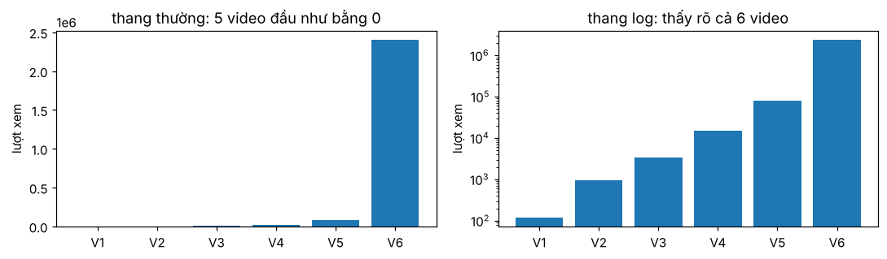
Lưu ý dấu _ trong 2_400_000: Python bỏ qua nó, chỉ để số dễ đọc. Learning rate ở P2 cũng hay được vẽ theo thang log, vì các giá trị thử thường là 0.0001, 0.001, 0.01.
dpi=150 đủ nét cho README, bbox_inches="tight" cắt bớt lề trắng. Lưu .svg hoặc .pdf nếu cần phóng to không vỡ.
Lỗi hay gặp
Vẽ hàng trăm hình trong vòng lặp mà không đóng. Mỗi plt.subplots() tạo một hình mới và giữ trong bộ nhớ cho tới khi đóng. Vẽ một hình cho mỗi epoch hay mỗi mẫu sẽ làm notebook chậm dần rồi cảnh báo "More than 20 figures have been opened". Lưu xong thì gọi plt.close(fig).
Ghi nhớ: biểu đồ tốt trả lời một câu hỏi. Viết câu hỏi hoặc kết luận làm tiêu đề ("Doanh thu tháng 5 tăng vọt?") thay vì tên dữ liệu ("revenue"), và luôn ghi tên trục kèm đơn vị.
Tự kiểm tra nhanh
Tóm tắt bài và thuật ngữ
Chủ đề
Điều cần nhớ
Lệnh tiêu biểu
Cấu trúc hình
Figure chứa các Axes; vẽ và chỉnh qua từng ax
fig, axes = plt.subplots(r, c)
Chọn biểu đồ
theo câu hỏi: thời gian, so nhóm, phân bố, quan hệ, lưới
plot, barh, hist, scatter, imshow
Learning curve
train và val trên cùng khung; giữ epoch val thấp nhất
ax.plot(...); ax.legend()
Phân bố
thử nhiều số bin; lệch phải thì dùng trung vị
ax.hist(v, bins=50), ax.boxplot(v)
Ảnh, ma trận
(H, W) hoặc (H, W, 3); tắt trục cho ảnh
ax.imshow(img); ax.axis("off")
Trình bày
tiêu đề là câu hỏi, nhãn trục có đơn vị, thang log khi trải nhiều bậc
loss hoặc metric theo epoch trên train và validation
confusion matrix
bảng đếm nhãn thật × nhãn model đoán
EDA
Exploratory Data Analysis: xem và hiểu dữ liệu trước khi làm model
Ô tự chấm đã giải đúng0 / 3
Bài 1
Đếm histogram bằng tay
tính tay
ax.hist([1, 2, 2, 3, 7], bins=3) chia khoảng từ giá trị nhỏ nhất tới lớn nhất thành 3 bin bằng nhau. Bin cuối gồm cả mép phải, các bin khác gồm mép trái nhưng không gồm mép phải.
Gợi ý
Các mép bin là 1, 3, 5, 7. Giá trị 3 nằm đúng mép giữa bin 1 và bin 2.
Lời giải
Bin [1, 3) chứa 1, 2, 2; bin [3, 5) chứa 3; bin [5, 7] chứa 7. Kiểm tra: np.histogram([1, 2, 2, 3, 7], bins=3) trả về (array([3, 1, 1]), array([1., 3., 5., 7.])). Bin giữa (5 tới 7) rỗng hoàn toàn không có ở đây, nhưng với dữ liệu có ngoại lai rất xa, phần lớn các bin sẽ rỗng và mọi điểm dồn vào bin đầu: lúc đó nên dùng thang log hoặc cắt ngoại lai trước khi vẽ.
Bài 2
Đọc learning curve
khái niệm
Bạn train 40 epoch. Train loss giảm đều từ 2,1 xuống 0,05. Val loss giảm tới 0,42 ở epoch 14, sau đó tăng dần lên 0,71 ở epoch 40. Val accuracy cao nhất 88% ở epoch 15.
Chuyện gì đang xảy ra sau epoch 14?
Nên giữ checkpoint của epoch nào?
Kể hai cách làm cho lần train sau.
Lời giải
Overfit: model tiếp tục khớp tập train (train loss vẫn giảm) nhưng tổng quát hóa kém đi (val loss tăng).
Epoch 14 hoặc 15, tùy bạn chọn theo val loss hay val accuracy; quan trọng là chọn theo validation, không theo train, và báo cáo kết quả cuối trên tập test riêng.
Dừng sớm (early stopping) khi val loss không giảm sau vài epoch; thêm regularization (weight decay, dropout, data augmentation); thêm dữ liệu; hoặc dùng model nhỏ hơn. Các cách này học kỹ ở P1.2 và P2.2.
Bài 3
Learning curve có đánh dấu
code
Viết hàm plot_curves(train, val) nhận hai list loss, vẽ hai đường trên cùng khung, kẻ đường dọc tại epoch có val loss thấp nhất, ghi chú epoch đó, có nhãn trục và legend. Thử với dữ liệu dưới.
importnumpyasnpimportmatplotlib.pyplotaspltdefplot_curves(train,val):epochs=np.arange(1,len(train)+1)best=int(np.argmin(val))fig,ax=plt.subplots(figsize=(6,3.4))ax.plot(epochs,train,marker="o",label="train")ax.plot(epochs,val,marker="o",label="validation")ax.axvline(epochs[best],color="gray",ls="--")ax.annotate(f"epoch {epochs[best]}: val {val[best]:.2f}",xy=(epochs[best],val[best]),xytext=(epochs[best]+0.4,val[best]+0.5),arrowprops=dict(arrowstyle="->"))ax.set_xlabel("epoch");ax.set_ylabel("loss");ax.legend()ax.set_title("Val loss thấp nhất rồi tăng lại")returnfig,axtrain=[2.1,1.4,1.0,0.8,0.65,0.55,0.47,0.41,0.36,0.32]val=[2.2,1.5,1.15,0.98,0.9,0.87,0.88,0.92,0.97,1.03]fig,ax=plot_curves(train,val)
Kết quả khi chạy
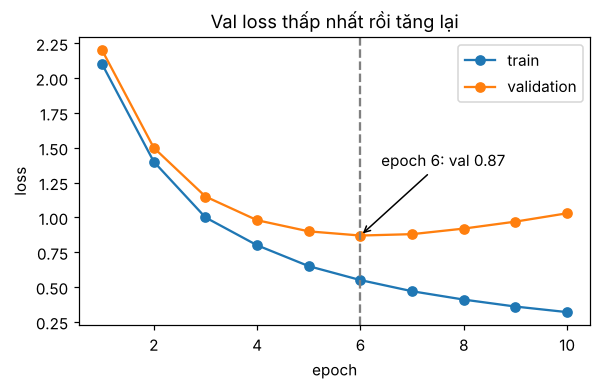
Bài 4
Confusion matrix từ dự đoán
code
Cho nhãn thật và dự đoán của một model phân loại 3 lớp. Tự tính confusion matrix bằng numpy (không dùng scikit-learn), vẽ có số trong từng ô, và in accuracy.
Với k lớp, np.zeros((k, k), int) rồi np.add.at(cm, (y_true, y_pred), 1) cộng 1 vào ô [y_true[i], y_pred[i]] cho mọi i cùng lúc. Cách khác: np.bincount(y_true * k + y_pred, minlength=k * k).reshape(k, k).
Tiếp notebook ở P0.3: từ bảng đã làm sạch, vẽ 5 biểu đồ và viết 5 kết luận. Nếu chưa làm P0.3, đoạn code khởi đầu dưới tạo sẵn bảng sạch.
Các bước
Nạp orders_clean.csv (hoặc chạy code khởi đầu).
Vẽ trên một hình 2 × 3 khung: doanh thu theo tháng (line), top 5 sản phẩm theo số lượng (barh, sắp xếp), phân bố giá trị đơn (histogram, có đường trung vị), số lượng theo thứ trong tuần (bar), giá với số lượng (scatter, có alpha), tỉ lệ hoàn theo sản phẩm (barh).
Mỗi khung có tiêu đề là một câu hỏi hoặc kết luận, nhãn trục có đơn vị.
Lưu hình eda.png với dpi=150.
Viết 5 kết luận, mỗi kết luận một câu có số liệu cụ thể, dựa trên biểu đồ.
Đủ 6 khung, mỗi khung có tiêu đề và nhãn trục, file eda.png mở ra đọc được chữ.
Có 5 kết luận có số liệu.
Code tham khảo
importmatplotlib.pyplotaspltmonthly=df[~df["returned"]].groupby(df["date"].dt.to_period("M"))["revenue"].sum()/1000top5=df.groupby("product")["qty"].sum().nlargest(5).sort_values()return_rate=df.groupby("product")["returned"].mean().sort_values()weekday=df.groupby(df["date"].dt.dayofweek)["qty"].sum()fig,ax=plt.subplots(2,3,figsize=(15,8))monthly.plot(ax=ax[0,0],marker="o");ax[0,0].set(title="Doanh thu có tăng theo tháng?",ylabel="triệu đồng",xlabel="")top5.plot.barh(ax=ax[0,1]);ax[0,1].set(title="Sản phẩm nào bán nhiều nhất?",xlabel="số lượng")ax[0,2].hist(df["revenue"],bins=40);ax[0,2].axvline(df["revenue"].median(),color="k",ls="--")ax[0,2].set(title="Giá trị đơn điển hình bao nhiêu?",xlabel="nghìn đồng",ylabel="số đơn")ax[1,0].bar(["T2","T3","T4","T5","T6","T7","CN"],weekday.values)ax[1,0].set(title="Thứ nào bán nhiều?",ylabel="số lượng")ax[1,1].scatter(df["price"],df["qty"]+np.random.default_rng(0).uniform(-.15,.15,len(df)),s=4,alpha=.3)ax[1,1].set(title="Đồ đắt có bán ít hơn?",xlabel="giá (nghìn đồng)",ylabel="số lượng (có rung nhẹ)")(return_rate*100).plot.barh(ax=ax[1,2]);ax[1,2].set(title="Sản phẩm nào hay bị hoàn?",xlabel="% đơn hoàn")plt.tight_layout()fig.savefig("eda.png",dpi=150,bbox_inches="tight")
Mẹo trong khung scatter: qty chỉ có 3 giá trị nên các điểm chồng khít lên nhau; cộng thêm một chút nhiễu nhỏ ("jitter") chỉ để vẽ giúp thấy được mật độ.
Xong bài khiMỗi biểu đồ có tiêu đề là một câu hỏi, có nhãn trục và đơn vị, và một kết luận đi kèm.